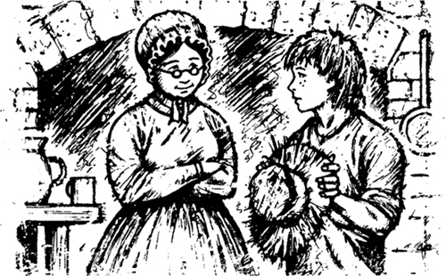
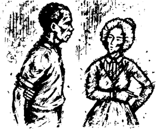

1

Nhà văn không biết tất cả mọi thứ!
Tôi là Huckleberry Finn. Bạn bè gọi tôi là Huck. Tôi mười bốn tuổi.
Bạn đã nghe về tôi chưa? Bạn đã đọc về tôi và người bạn thân của tôi, Tom Sawyer? Ông Twain đã viết một cuốn sách về chúng tôi. Cuốn sách về cả hai chúng tôi, nhưng ông Twain gọi đó là Những cuộc phiêu lưu của Tom Sawyer. Những câu chuyện trong cuốn sách đó là thật. Nhưng ông Twain không kể cho bạn mọi thứ về chúng tôi. Ông ấy không biết mọi thứ về chúng tôi. Ông ấy là một nhà văn, không phải một cậu bé. Nhà văn không biết tất cả mọi thứ về trẻ con!
Bây giờ tôi sẽ kể cho bạn thêm về câu chuyện của mình. Nhưng trước hết, tôi sẽ nhắc lại cho bạn về tôi.
Tôi sinh ra ở St Petersburg, tiểu bang Missouri. St Petersburg nằm trên bờ phía tây của Sông Mississippi. Mẹ tôi mất từ lâu rồi. Sau đó, cha tôi rời khỏi thị trấn và tôi sống một mình.
Mẹ của Tom Sawyer cũng mất rồi. Nhưng Tom sống với dì mình - Dì Polly. Tôi thì không có dì. Tôi sống một mình trong nhiều năm. Vào mùa hè, tôi ngủ trên những cánh đồng gần sông. Vào mùa đông, tôi ngủ trong nhà kho trên các trang trại gần thị trấn. Tôi không đi học và không học bài. Tôi không đi nhà thờ và cũng không cầu nguyện. Tôi không rửa mặt và không chải tóc. Cuộc sống của tôi rất tốt!
Tôi không có dì. Tôi không có anh chị em nào cả. Nhưng tôi có rất nhiều bạn.
Hầu hết các cậu bé ở St Petersburg đều là bạn tôi. Nhưng bố mẹ của chúng không phải bạn tôi! Họ không muốn tôi đến nhà họ. Họ không muốn tôi nói chuyện với con cái của họ. Tại sao? Vì con cái của họ không thích đi học. Và con cái của họ không thích đi nhà thờ. Tất cả bạn bè của tôi đều muốn được như tôi! Bố mẹ của chúng không thích thế.
Còn cha tôi thì sao? Tôi không gặp ông ấy thường xuyên. Đôi khi ông ấy đến St Petersburg. Nhưng ông ấy là một người đàn ông xấu. Ông ấy luôn say xỉn. Ông ấy thường đánh tôi và ăn cắp đồ của tôi. Tôi sợ ông ấy.
Hai năm trước, vào năm 1844, Tom Sawyer và tôi có một cuộc phiêu lưu. Có hai người đàn ông xấu trong thị trấn của chúng tôi. Họ đã ăn cắp tiền và giấu nó đi. Họ muốn tấn công một bà góa già. Một trong hai người đàn ông xấu này ghét bà góa này - bà Douglas. Chồng bà ấy đã chết. Ông ấy từng là một thẩm phán. Vài năm trước, ông ấy đã đưa người đàn ông này vào tù. Người đàn ông muốn làm hại bà Douglas. Anh ta và bạn của anh ta muốn vào nhà bà ấy. Họ muốn cắt mặt và tai bà ấy.
Tom và tôi phát hiện ra được kế hoạch của những người đàn ông đó. Và Tom và tôi đã kể cho Thẩm phán Thatcher về chuyện đó. Tôi rất tức giận những người đàn ông đó. Tôi thích bà Douglas. Bà ấy tốt với tôi. Đôi khi bà ấy cho tôi thức ăn và quần áo.
Thẩm phán Thatcher và một số người đàn ông khác đến nhà bà Douglas. Họ bắt được một trong hai tên xấu. Người đàn ông kia đã trốn thoát. Hắn ta trốn trong một hang động ở sườn đồi. Nhưng hắn ta đã sớm chết ở đó. Tom Sawyer biết nơi ẩn náu của hắn ta. Cậu ấy đã nói cho Thẩm phán Thatcher biết. Những người đàn ông trong thị trấn đã tìm thấy số tiền ăn cắp trong hang động.
Sau đó, mọi người ở St Petersburg đều hài lòng với Tom. Và họ cũng hài lòng với tôi. Bố mẹ của bạn tôi mỉm cười với tôi. Họ nói chuyện với tôi. Họ mời tôi đến nhà của họ! Và Thẩm phán Thatcher đã trao số tiền từ hang động cho Tom và tôi. Mỗi chúng tôi nhận được sáu ngàn đô la! Thẩm phán Thatcher đã trông nom số tiền đó giúp chúng tôi. Mỗi tuần ông ấy đưa cho chúng tôi năm đô la.
Một ngày nọ, bà Douglas tìm thấy tôi trong một nhà kho. Bà ấy đưa tôi về nhà bà ấy.
‘Bây giờ nơi này là nhà của con, Huckleberry’, bà góa nói. ‘Con đã cứu mạng ta khỏi những kẻ xấu xa đó. Bây giờ ta sẽ chăm sóc con. Con sẽ sống ở đây với ta. Đêm nào con cũng sẽ ngủ trên một chiếc giường êm ái. Và con sẽ mặc quần áo sạch sẽ’.
‘Mỗi ngày con sẽ đi học, trừ ngày Chủ Nhật’, bà Douglas nói. ‘Con sẽ học đọc và viết. Mỗi sáng con sẽ rửa mặt và mỗi ngày con sẽ chải đầu. Và vào các ngày Chủ Nhật, chúng ta sẽ đi lễ nhà thờ. Con sẽ thấy hạnh phúc khi ở với ta, Huckleberry!’

Nhưng tôi không hạnh phúc. Tôi thích bà Douglas. Tôi cố gắng làm bà ấy vui lòng. Nhưng tôi không thích giường. Tôi không thích quần áo sạch sẽ và tôi không thích rửa mặt.
Và có một vấn đề nữa. Bà Douglas có một người em gái. Tên của bà ấy là cô Watson. Bà ấy cũng sống trong nhà bà Douglas.
Cô Watson sở hữu một nô lệ - một ông già da đen. Tên ông ấy là Jim.
Tôi thích Jim. Ông ấy tốt với tôi. Nhưng tôi không thích chủ của ông ấy và bà ấy cũng không thích tôi. Bà Douglas muốn tôi sạch sẽ. Điều đó thật tệ! Nhưng em gái bà ấy muốn tôi trở nên tốt. Điều đó còn tệ hơn!

‘Con phải đọc Kinh thánh hằng ngày’, cô Watson nói với tôi. ‘Và con phải trở thành một người tốt hơn’.
Nhưng tôi không muốn trở thành một người tốt hơn. Tôi muốn được hạnh phúc!
Vào cuối cuốn sách của ông về Tom và tôi, ông Twain đã viết thế này -
Huck không muốn ở lại St Petersburg mãi mãi. Một ngày nọ, anh ta lên một chiếc thuyền nhỏ và đi về phía nam. Anh ta đi dọc theo sông Mississippi. Nhưng đó là một câu chuyện khác!
Quyển sách này là câu chuyện khác đó. Ông Twain không biết mọi thứ về tôi. Đúng là tôi đã rời khỏi St Petersburg. Tôi không hạnh phúc ở nhà bà Douglas. Đúng như vậy. Nhưng đó không phải là lý do khiến tôi lên đường. Lý do là thế này - cha tôi đã quay trở lại St Petersburg!
Mục lục
- Tiêu Đề
- Nội Dung
- Ghi Chú về Tác Giả
- Ghi Chú về Câu Chuyện Này
- Những Người trong Câu Chuyện Này
- 1. Nhà Văn Không Phải Biết Tát Cả!
- 2. Ngôi Lều Trong Rừng
- 3. Hai Kẻ Bỏ Trốn
- 4. Trên Đám Phao
- 5. Những Quyết Định
- 6. Vua và Công Tước
- 7. Những Kẻ Lừa Đảo Tin Cậy
- 8. Chiếc Quan Tài
- 9. Anh Em Thêm Đây!
- 10. Tom Sawyer
- Bản Quyền